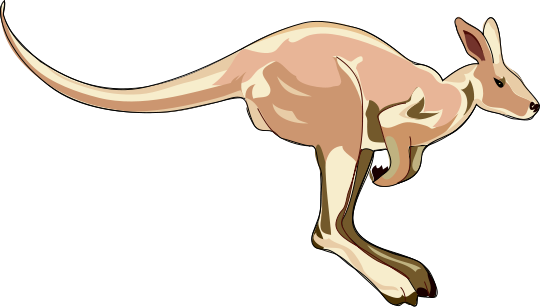

var limit = 255 - threshold, r, g, b;
for (var i = 0, n = pix.length; i < n; i += 4) {
r = pix[i];
g = pix[i+1];
b = pix[i+2];
if (r > limit &&
g > limit &&
b > limit &&
abs(r-g) < distance &&
abs(r-b) < distance &&
abs(g-b) < distance) {
pix[i+3] = 1;
}
}